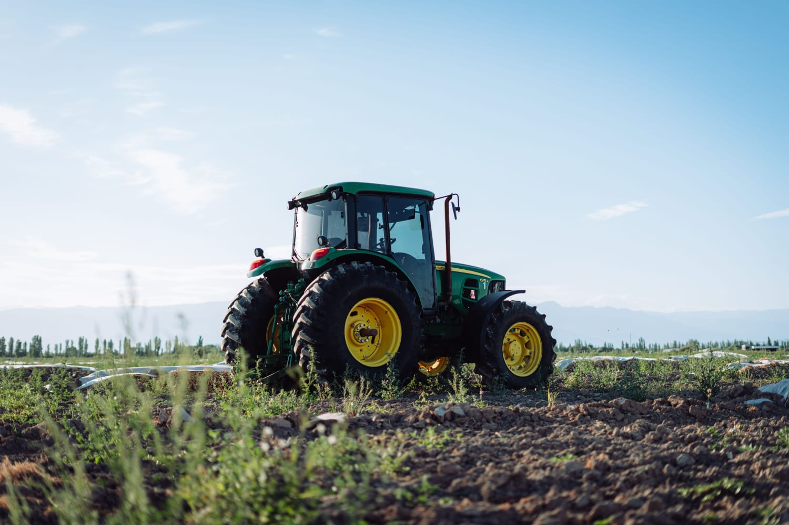

Agro forte, para um futuro sustentável
Olá, visitante!
Aqui você vai aprender sobre produção e preservação.

O que é o agronegócio?
São várias atividades conectadas que vão desde a produção até a matéria prima...
O que é produção sustentável?
Produzir alimentos de forma consciente, cuidando do manejo do solo e da água...
Tecnologia do campo
Drones, Irrigação inteligente e Agricultura de precisão são o futuro do campo.
Teste seus conhecimentos!
1. Qual o objetivo de um agronegócio sustentável?